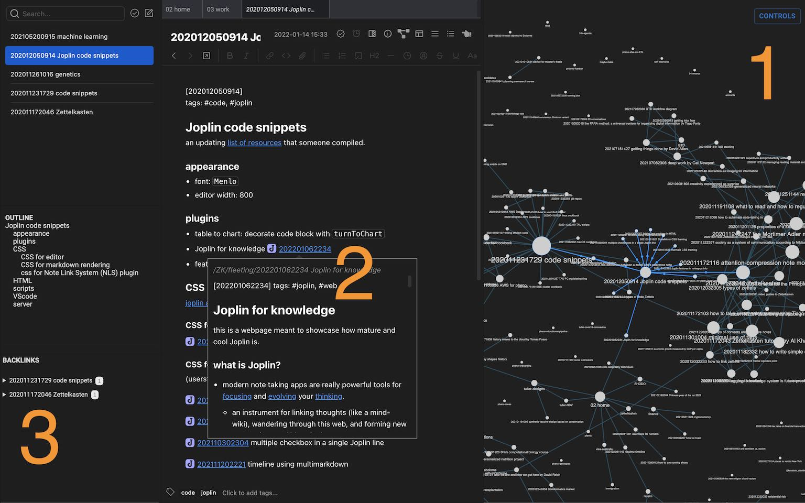
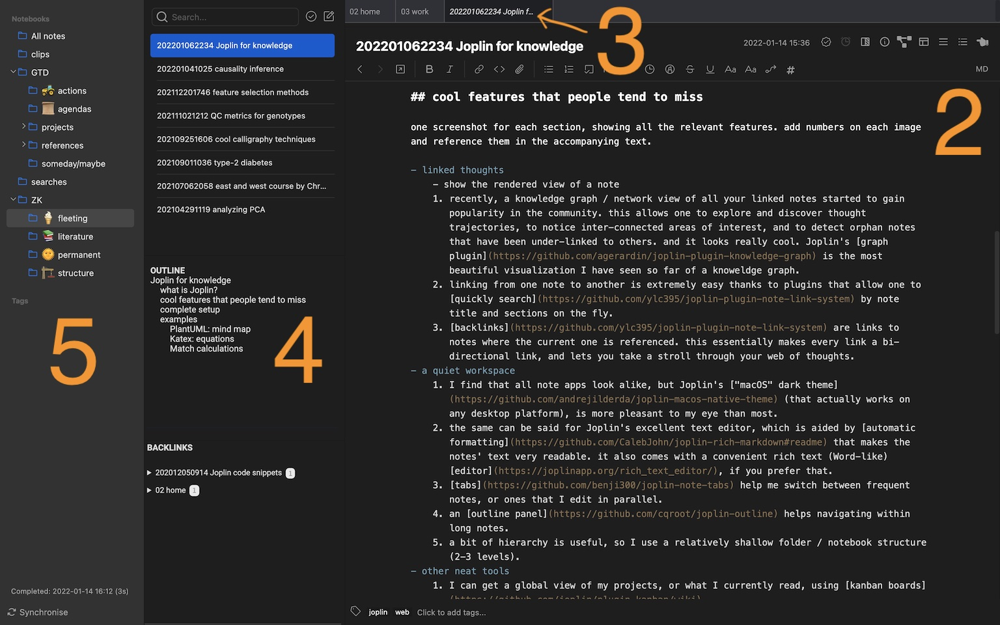
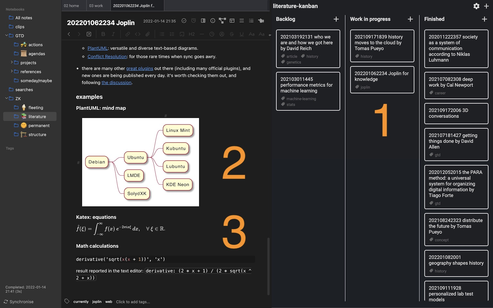

- modern note taking apps are really powerful tools for focusing and evolving your thinking.
- an instrument for linking thoughts (like a mind-wiki), wandering through this web, and forming new connections and ideas in the process.
- Joplin, developed by Laurent Cozic, is my favorite app. I use it in my work and personal life, probably as often as I use a browser.
- it supports all the main features that a knowledge app requires (demonstrated in the next sections).
- it strikes a good balance, once you set it up, between simplicity and feature richness.
- there are actually quite a few apps that share many of these features, each with its own flavor.
- Joplin has additional advantages that come with its free and open source software (FOSS) approach.
- future-proof
- one of the most important things for accumulating knowledge over years, is the ability to take all of it to a new environment and continue developing it.
- Joplin notes are stored in a simple standard format that you’ll be able to view, search and edit even in 20 years.
- completely free & secure cloud sync
- Joplin’s ideology is to give you the freedom to choose where your data is stored. this can be locally on your device, on your home network (like so or so), or on various commercial cloud services (including an excellent one by the developer).
- it also encrypts your data.
- and keeps the version history of your notes.
- in the case of most apps, sync is either secure or free (and then your data is in someone else’s hands), and sometimes neither of these.
- available on every device
- I use Joplin on the mobile often to take quick notes when I’m not near a PC.
- however, if most of your work is done on mobile, there may be better apps.
- mature and well-maintained core infrastructure
- extendable through plugins, which play a major role in the user experience, as you can see below. I included a full list of the ones that I use daily.
- customizable UI.
- additional APIs for developers.
- awesome community of users / developers
Linked thoughts

- recently, knowledge graphs / network view of all your linked notes started to gain popularity in the community. this allows one to explore and discover thought trajectories, to notice inter-connected areas of interest, and to detect orphan notes that have been under-linked to others. and it looks really cool. Joplin’s graph plugin is the most beautiful visualization I have seen so far of a knoweldge graph.
- linking from one note to another is extremely easy thanks to plugins that allow one to quickly search by note title and sections on the fly. this internal link is also rendered in a preview pop-up, before you click and take one step forward on the graph.
- backlinks are links to notes where the current one is referenced. this essentially makes every link a bi-directional link, and lets you take a stroll through your web of thoughts.
A quiet workspace

- I find that all note apps look alike, but Joplin’s “macOS” dark theme (that actually works on any desktop platform) is more pleasant to my eye than most.
- the same can be said for Joplin’s excellent text editor, which is aided by automatic formatting that makes the notes' text very readable. it also comes with a convenient rich text (Word-like) editor, if you prefer that.
- tabs help me switch between frequent notes, or ones that I edit in parallel.
- an outline panel helps navigating within long notes.
- a bit of hierarchy is useful, so I use a relatively shallow folder / notebook structure (2-3 levels).
Other neat tools

- I can get a global view of my projects, or what I currently read, using kanban boards.
- I like to visually brainstorm, design and document my work with Mermaid and PlantUML diagrams.
- Mathematical equations, and even advanced calculations, can be added to any note.
- additional great features (that I use less often)
- tasks.
- note attachments, with preview support for images, videos, PDFs and audio.
- web clipper for saving web pages and screenshots.
- note sharing and collaboration.
Complete setup
- I use Joplin Cloud for syncing my notes.
- the following plugins are pretty essential:
- editor enhancements
- macOS Theme: my personal preference is the base16-dark theme, but there are many other variations.
- Rich Markdown: automatic formatting and highlighting in Joplin’s text editor.
- Note Tabs
- Outline: a table of contents panel.
- Note List and Sidebar Toggle Buttons: focus mode that clears most of the clutter from the screen.
- Menu items, Shortcuts, Toolbar Icons: convenient editor shortcuts.
- Markdown Table Formatter: helps you get text-based tables right.
- Markdown Table: Colorize: helps you get text-based tables right.
- knowledge tools
- Note Link System: backlinks, note search when linking out, links to paragraphs within notes, and other goods.
- Inline Tags: quick tagging of notes within the text.
- Knowledge Graph
- Note Templates: great for developing a consistent note structure.
- Simple Backup: the cloud is not a replacement for good old automatic backups.
- Kanban Boards
- PlantUML: versatile and diverse text-based diagrams.
- Conflict Resolution: for those rare times when sync goes awry.
- editor enhancements
- there are many other great plugins out there (including many official plugins), and new ones are being published every day. it’s worth checking them out, and following the discussion.